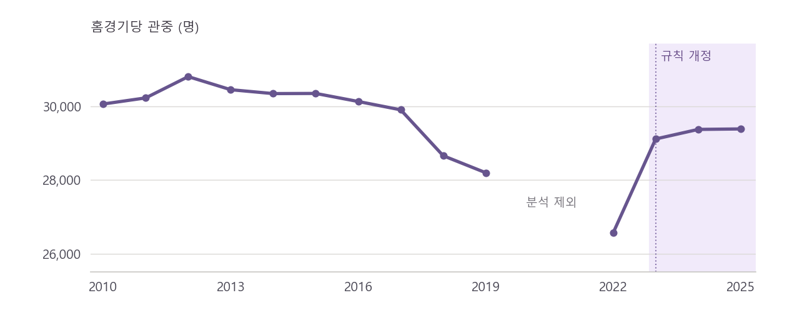

MLB ATTENDANCE STUDY
규칙이 관중을 불렀는가?
피치 타이머와 수비 시프트 제한을 도입한 2023년, MLB 총관중은 전년보다 9.6% 늘었다. 팬데믹 이후 관중석이 다시 차던 시기에, 규칙 개정과 함께 나타난 변화는 어느 정도였을까?
한 시즌의 총관중을 경기당 관중으로
시즌마다 홈경기 수가 달라 총관중만으로는 관람 수요를 비교하기 어렵다. 구단별 관중을 홈경기 수로 나눈 뒤 같은 구단끼리 비교했다. 리그 추세를 볼 때는 전체 관중을 전체 홈경기 수로 나눴다. 구단명이 바뀐 애슬레틱스도 하나의 구단으로 연결하기 위해 franchID를 사용했다.

그래프의 연도별 수치 보기
| 시즌 | 관중(명) | 시즌 | 관중(명) |
|---|---|---|---|
| 2010 | 30,063 | 2017 | 29,906 |
| 2011 | 30,229 | 2018 | 28,660 |
| 2012 | 30,806 | 2019 | 28,199 |
| 2013 | 30,451 | 2022 | 26,567 |
| 2014 | 30,346 | 2023 | 29,114 |
| 2015 | 30,350 | 2024 | 29,374 |
| 2016 | 30,131 | 2025 | 29,387 |
어느 시점과 비교할까?
두 시즌을 직접 비교할 때는 30개 구단의 경기당 관중 차이를 대응표본 t 검정으로 살폈다. 장기 추세와 비교할 때는 리그 전체의 연도별 관중에 회귀모형을 적용했다.
같은 구단의 두 시즌을 짝지으면 홈경기 한 경기당 평균 2,551명이 늘었다. 비교 기준인 2022년의 리그 경기당 관중은 2019년보다 5.8% 낮았다.
코로나19 이전 시즌과 비교하면 증가폭이 작아졌다. 30개 구단 중 관중이 늘어난 곳은 15개였다. 구단별 차이의 평균은 5% 유의수준에서 0과 구별되지 않았다.
개정 전후에 같은 선형 추세를 가정한 모형에서, 2023년부터 경기당 관중 수준이 2,228명 높아진 것으로 추정됐다. 95% 신뢰구간은 735명에서 3,721명이다.
2022년을 뺐을 때 달라진 결론
팬데믹 회복기의 영향을 살피기 위해 2022년을 제외하고 같은 모형을 다시 적합했다. 수준 차이는 +1,214명으로 작아졌고 p값은 0.102였다. 규칙 개정과 관중 반등은 같은 시기에 관찰됐지만, 상승폭과 통계적 유의성은 2022년을 포함하는지에 따라 달라졌다.
개정 후 관측한 시즌은 세 번뿐이고 비교할 대조 리그도 없다. 티켓 가격, 구장 수용 인원, 구단별 마케팅의 영향까지 분리하기는 어렵다. 구단이 흥행 성과를 보고할 때는 전년 대비 증가율과 함께 코로나19 이전 수준과 장기 추세를 제시할 수 있다.
분석 자료
2025년판 Teams.csv · Python, pandas, SciPy, statsmodels, Matplotlib